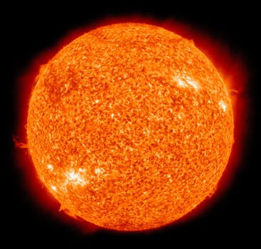

Sun
The Sun is in the center of our solar system. It's a star and just like as many other stars in the universe and in a certain group of starts called "Yellow Dwarfs". Stars are hot balls of gas, mostly made up of hydrogen and helium. Without the sun, life wouldn't be possible on Earth!
Did You Know?
Sun
The Sun is in the center of our solar system. It's a star and just like as many other stars in the universe and in a certain group of starts called "Yellow Dwarfs". Stars are hot balls of gas, mostly made up of hydrogen and helium. Without the sun, life wouldn't be possible on Earth!
Did You Know?
- Temperatures are up to 27 million degrees Fahrenheit.
- It's about 109 times the size of Earth.
- It's around 4.5 billion years old.
- It takes up about 99.8% of the mass of out solar system.

The Sun

Layers of the Sun

A Solar Flare